| Porte do município (habitantes) | Nº Municípios (2010) | Nº Municípios (2022) | Fração (2010 e 2022) |
|---|---|---|---|
| Até 2.500 | 260 | 289 | 50% |
| 2.501 a 8.000 | 1912 | 1808 | 33% |
| 8.001 a 20.000 | 1749 | 1673 | 20% |
| 20.001 a 500.000 | 1604 | 1751 | 10% |
| Mais de 500.000 | 40 | 49 | 5% |
8 Microdados da Amostra
8.1 Introdução
Nos dois capítulos anteriores, introduzimos conceitualmente o Censo Demográfico e aprendemos a explorar um dos seus principais produtos, os Agregados por Setor Censitário. Todavia, os Agregados são limitados com relação aos aspectos sociodemográficos que são possíveis de analisar a partir do Censo, já que se referem somente aos itens levantados no Questionário Básico. Neste capítulo, apresentaremos um produto distinto e complementar, os microdados da amostra do Censo Demográfico, que permitem análises muito mais ricas em termos de variáveis, embora ao custo de uma resolução espacial menor.
A modalidade amostral do Censo tem raízes na edição de 1960, quando o Brasil adotou técnicas de amostragem probabilística na coleta censitária. A partir de então, passou-se a utilizar dois tipos de questionário para as entrevistas domiciliares, o Básico e o da Amostra, que seguem até os dias atuais. Os microdados são a forma mais desagregada de divulgação dos Resultados da Amostra, com os registros individuais1 de cada domicílio e morador entrevistados.
Ao contrário dos agregados por setor, os microdados não vêm com totais pré-calculados para áreas diferentes do território, mas sim com os valores individuais de cada variável para cada domicílio ou pessoa. É o pesquisador quem decide quais estatísticas calcular e como organizá-las. Essa riqueza temática é possível porque os microdados registram todas as variáveis do Questionário da Amostra, o instrumento mais completo do Censo. Esse questionário contém todos os quesitos do Questionário Básico (26 questões no Censo 2022 e 34 no de 2010) e um conjunto adicional de temas, como outras características dos domicílios (ex.: acesso a Internet e quantidade de cômodos) e dos indivíduos (ex.: nupcialidade, fecundidade, religião, deficiência, migração e deslocamento para estudo/trabalho) (IBGE, 2024). Em 2022, o questionário da amostra foi composto 77 questões, uma redução importante em relação ao questionário de 2010, que contava com 102 quesitos. Em ambas as edições, o questionário foi respondido por aproximadamente 1 de cada 10 domicílios brasileiros.
Em contrapartida, a menor unidade geográfica identificável de cada domicílio ou indivíduo nos microdados é a área de ponderação, um agrupamento de setores censitários descrito em detalhe na Seção 8.2.3. Esse recorte é bastante mais amplo que o setor censitário, já que uma área de ponderação contém, no mínimo, 400 domicílios particulares ocupados na amostra. Para se ter uma ideia, no Censo de 2010, o maior município do país, São Paulo-SP, possuía 5.082 setores censitários e somente 107 áreas de ponderação. Em municípios menores, ela corresponde ao município inteiro. Isso significa que análises espacialmente detalhadas (como as possíveis com os Agregados e a Grade Estatística) ficam fora do alcance dos microdados. No entanto, para estudar variáveis que o Questionário Básico não cobre, os microdados são o único caminho.
AvisoMicrodados do Censo 2022 ainda não disponíveis
No momento da escrita deste capítulo (início de abril de 2026), o IBGE ainda não havia divulgado os microdados da amostra do Censo Demográfico 2022. Todos os exemplos práticos das seções 4 e 5 utilizam dados do Censo de 2010, acessados via pacote censobr. Os conceitos e procedimentos apresentados são equivalentes para ambas as edições, e os códigos deverão funcionar para 2022 com ajustes mínimos após a divulgação dos dados.
8.2 Aspectos metodológicos
8.2.1 O plano amostral
Para o planejamento da coleta dos dados do Questionário da Amostra, o IBGE realiza uma amostragem probabilística no interior de cada setor censitário. Em cada setor, uma fração fixa de domicílios particulares é selecionada por sorteio aleatório. Portanto, o setor censitário é o estrato do plano, com a seleção ocorrendo de forma independente dentro de cada um, onde nenhum domicílio é selecionado com base no que ocorreu nos demais setores.
Quando um domicílio é selecionado, todos os seus moradores são entrevistados. Isso cria dois regimes de amostragem distintos para os dois arquivos de microdados, cuja distinção tem consequências diretas para a análise, como veremos na Seção 8.3:
- Microdados de domicílios: amostragem aleatória estratificada de domicílios, com estratos nos setores censitários.
- Microdados de pessoas: amostragem estratificada e conglomerada, com estratificação nos setores censitários (estratos = setores censitários) e conglomeração nos domicílios (conglomerados = domicílios). Isso significa que os indivíduos não são sorteados diretamente, mas compõem um conglomerado inserido em um domicílio que foi selecionado.
A fração amostral aplicada aos setores depende do porte do município ao qual pertencem. Para os dois últimos Censos (2010 e 2022), estes valores foram os mesmos, conforme se observa na Tabela 8.1. Isso resultou em 6,2 milhões de domicílios com 20,6 milhões de pessoas no Censo de 2010 e 7,8 milhões de domicílios com 21,9 milhões de pessoas no Censo de 2022 (IBGE, 2016, 2024). Em ambos os casos, temos quase 11% do total da população em análise respondendo ao Questionário da Amostra, cujos dados exploraremos mais adiante.
A fração mais alta nos municípios menores garante que mesmo localidades com poucos domicílios tenham amostras de tamanho suficiente para a divulgação de resultados com qualidade estatística aceitável. Em contrapartida, nos 49 municípios com mais de 500 mil habitantes em 2022, a fração de 5% já representa volumes consideráveis de domicílios entrevistados.
Em ambas as edições, alguns distritos e subdistritos de grandes municípios receberam frações maiores que a padrão municipal, para viabilizar a divulgação de resultados em nível inframunicipal. Em 2022, o procedimento foi estendido também a Terras Indígenas, Territórios Quilombolas e Favelas e Comunidades Urbanas, que receberam frações diferenciadas chegando a 100% em alguns casos (IBGE, 2024).
8.2.2 Expansão da amostra
Numa pesquisa por amostragem probabilística, cada domicílio selecionado não representa apenas a si mesmo. Ele “fala” por outros domicílios que não foram sorteados. Para quantificar essa representatividade, cada domicílio da amostra recebe um peso amostral, que indica quantos domicílios ele representa na população. Para esclarecer esse processo, suponha um município hipotético com a configuração da Figura 8.1, com os 105 domicílios distribuídos em 3 áreas de ponderação e 5 setores censtiários.
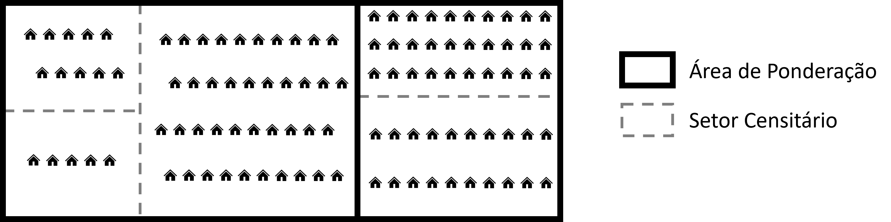
Suponha que a fração amostral seja de 20% para todo esse município, implicando que 1 a cada 5 domicílios de cada setor censitário seja selecionado para compor a amostra. Uma primeira aproximação para esse peso é o inverso da fração amostral efetiva. Ou seja, cada domicílio selecionado representa aproximadamente 5 outros domicílios (pois, \(1/0,20 = 5\)). Deste modo, suponha que tenhamos selecionado aleatoriamente os domicílios na cor vermelha conforme a Figura 8.2 no município hipotético. Nesse processo, cada recebe peso amostral igual a 5 (ou seja, representam 5 domicílios em seu setor).
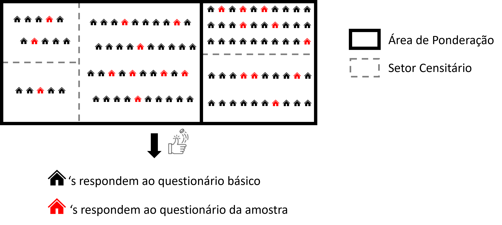
Esse peso inicial, porém, pode não refletir adequadamente a distribuição real da população. Por acaso, a amostra pode ter capturado um número menor de pessoas de 0 a 15 anos ou mais pessoas do sexo feminino em comparação ao que se sabe do universo naquela região. Para corrigir essa variação aleatória, o IBGE realiza um processo de calibração destes pesos.
A calibração consiste em ajustar os pesos iniciais de maneira que as estimativas da amostra se aproximem dos totais já conhecidos para um conjunto de variáveis auxiliares. Tais variáveis são obtidas de quesitos que existem em ambos os questionários (Básico e da Amostra), ou seja, através delas conseguimos obter totais populacionais conhecidos do processo de levantamento do Censo.
O método de calibração baseia-se em uma estratégia de Mínimos Quadrados Generalizados (MQG), considerando as propostas de Bankier et al. (1992) e Deville et al. (1993), similar ao empregado em censos de outros países, como o canadense (IBGE, 2016, 2024; Statistics Canada, 2009). Questões metodológicas específicas sobre amostragem complexa não são o foco deste livro, mas o(a) leitor(a) interessado pode ganhar mais profundidade teórica e prática consultando as obras de Silva et al. (2021), Lumley (2011) e Zimmer et al. (2024).
É importante destacar que esse processo de calibração é realizado no nível da área de ponderação, que recebe esse nome justamente por servir como unidade espacial onde se realiza a calibração dos pesos. Nesse sentido, as restrições de calibração consistem em impor que os totais populacionais das variáveis auxiliares se aproximem da estimativa obtida a partir somente das informações da amostra expandida (multiplicada por estes pesos) neste nível de desagregação espacial.
Em 2010, foram consideradas 40 restrições, incluindo total de pessoas, total de domicílios, distribuição por sexo e faixas etárias detalhadas (IBGE, 2016). Em 2022, o conjunto foi ampliado para 47 restrições, com a adição de Terras Indígenas, Territórios Quilombolas, Favelas e Comunidades Urbanas, além de categorias de número de banheiros nos domicílios particulares permanentes (IBGE, 2024).
Nesse processo, há ainda a preocupação em evitar pesos extremos (muito pequenos ou muito grandes) que poderiam distorcer as estimativas. Isso se dá através da imposição de limites aos pesos calibrados. Na prática, considerando os pesos inicial e calibrado de um domicílio \(i\) em uma área de ponderação \(a\) como \(w_{ai}\) e \(w^*_{ai}\), respectivamente, tem-se que os pesos calibrados não podem ser nem inferiores a 1/5 (\(w^*_{ai} \ge w_{ai}/5\)) nem superiores a 5 vezes (\(w^*_{ai}\le 5w_{ai}\)) o valor deste peso inicial (IBGE, 2024).
O produto final é um único peso calibrado para cada domicílio da amostra, que é replicado para todos os seus moradores. Esse peso, armazenado na variável V0010 para a base de microdados do Censo de 2010, é o que utilizaremos em toda a análise. O IBGE recomenda que ele seja mantido como valor fracionário (com 10 casas decimais), pois o arredondamento para valores inteiros rompe a consistência das restrições de calibração (IBGE, 2024).
Na tabela da Figura 8.3 abaixo, obtida de um screenshot do documento metodológico do Censo de 2022 (IBGE, 2024), é possível evidenciar o resultado desse processo, comparando as diferenças entre os totais observados e os totais estimados com os pesos amostrais calibrados. Observe, as diferenças são sempre menores que 1%, à exceção da variável Total de domicílios particulares permanentes sem banheiro (~1,35%).
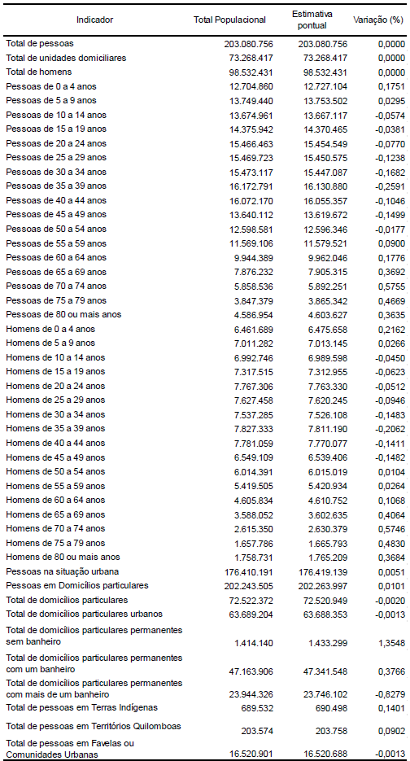
8.2.3 Áreas de ponderação (aspectos metodológicos)
Conforme mencionado anteriormente, a área de ponderação é o recorte geográfico mais desagregado para o qual os microdados da amostra podem ser divulgados publicamente. No Censo de 2010, estamos falando de 10.184 áreas de ponderação compreendendo os cerca de 313 mil setores censitários. Para o Censo de 2022, temos, até o presente momento2, somente áreas de ponderação preliminares (cuja malha espacial não foi divulgada), com pesos calibrados para a produção de alguns resultados parciais. Eles compõem um total de 10.607 áreas de ponderação, que abrangem os 468 mil setores censitários do país.
Dois critérios justificam essa escolha. O primeiro é a precisão estatística, já que domínios geográficos muito pequenos produzem estimativas com erros amostrais elevados. O segundo é a proteção da confidencialidade, já que identificar unidades geográficas menores nos microdados públicos permitiria, em muitas situações, identificar domicílios ou indivíduos específicos.
A formação das áreas de ponderação obedece a três critérios simultâneos: (i) contiguidade dos setores que a compõem; (ii) tamanho mínimo de 400 domicílios particulares ocupados na amostra; e (iii) homogeneidade socioeconômica interna. Em 2022, a homogeneidade foi maximizada por um algoritmo baseado em oito variáveis dos setores censitários, entre elas renda média do responsável, proporção de domicílios na rede de esgoto e estrutura etária da população (IBGE, 2024).
O método de formação varia conforme o porte do município. Em municípios com menos de 100 mil habitantes nos quais é possível formar pelo menos duas áreas, o processo é automático, via algoritmo em R desenvolvido pelo IBGE. Em municípios com mais de 100 mil habitantes, os técnicos do Instituto realizam o agrupamento manualmente, utilizando as áreas de ponderação do Censo 2010 como referência e fazendo ajustes com base em critérios de homogeneidade e morfologia urbana. Municípios com uma única área cobrem o território municipal por inteiro.
8.3 Os pacotes survey e srvyr
Como discutido na seção anterior, os microdados da amostra têm uma estrutura amostral complexa. A seleção foi feita por amostragem estratificada (estratos nos setores censitários) nos domicílios, com uma etapa adicional de conglomeração no caso de indivíduos. Cada observação tem um peso diferente resultante da calibração. Calcular estatísticas sem levar essa estrutura em conta produz estimativas que, para as médias e totais, podem estar razoavelmente corretas, mas com erros-padrão incorretos (geralmente subestimados). Isso faz com que intervalos de confiança sejam mais estreitos do que deveriam, o que pode levar a conclusões equivocadas sobre a significância das diferenças encontradas.
O pacote survey para R (Lumley, 2023) foi desenvolvido especificamente para lidar com esse problema. A ideia é implementar estimadores e métodos de estimação de variância corretos para amostras complexas, incorporando automaticamente os pesos, a estratificação e a conglomeração em todos os cálculos. Vale salientar que o pacote survey é inclusive a solução utilizada pelo corpo técnico do IBGE no processo de calibração dos pesos desde o Censo de 2010 (IBGE, 2016, 2024). O ponto de partida é a criação de um objeto de desenho amostral (survey design object) com a função svydesign(), que armazena os dados junto com a especificação do plano de amostragem. Todas as funções de análise recebem esse objeto em vez do data frame original.
Já o pacote srvyr (Ellis & Schneider, 2023) é uma extensão do survey que oferece uma interface no estilo tidyverse. O objeto de desenho é criado com as_survey_design(), que aceita os mesmos argumentos de svydesign() mas sem fórmulas, de modo a se integrar naturalmente ao fluxo |>. A análise por grupos usa group_by() e summarize(), exatamente como no dplyr.
A Tabela 8.2 apresenta as principais funções equivalentes entre os dois pacotes.
survey e srvyr.
| Tarefa | survey |
srvyr |
|---|---|---|
| Criar objeto de plano amostral | svydesign() |
as_survey_design() |
| Média | svymean() |
survey_mean() |
| Total | svytotal() |
survey_total() |
| Mediana / quantis | svyquantile() |
survey_median() / survey_quantile() |
| Proporção | svymean() |
survey_prop() |
| Estatísticas por grupo | svyby() |
group_by() + summarize() |
Nos exemplos das próximas seções, usaremos exclusivamente o srvyr. Leitores que preferirem o survey podem consultar Lumley (2011) e Zimmer et al. (2024) para a sintaxe equivalente. Eles se baseiam no tutorial de Silva et al. (2017), apresentado no 6º Seminário de Metodologia do IBGE em 2017. Para quem deseja aprofundar em fundamentos metodológicos de amostragem complexa, com foco especial no Censo Demográfico brasileiro, o livro de Pessoa & Silva (1998) é uma referência clássica na área.
8.4 Analisando microdados de domicílios
Esta seção e a próxima (Seção 8.5) percorrem um ciclo completo de trabalho com microdados do Censo, desde a obtenção dos dados brutos à visualização dos resultados. A seção atual trata dos microdados de domicílios e a seguinte dos microdados de indivíduos. Em ambas, usamos Belo Horizonte como município de exemplo, o que nos permite explorar um contexto urbano de grande porte com diversidade interna expressiva. Como os microdados da amostra do Censo 2022 ainda não foram divulgados pelo IBGE no momento da escrita deste capítulo, todos os exemplos utilizam dados do Censo de 2010, acessados via pacote censobr.
8.4.1 Obtendo e preparando os dados
O ponto de partida é carregar os pacotes necessários para as duas seções3.
library(tidyverse)
library(censobr)
library(geobr)
library(survey)
library(srvyr)Antes de ler os dados, vale consultar o dicionário de variáveis do arquivo de domicílios. A função data_dictionary() do censobr abre arquivos html no seu browse com um quadro com nomes, descrições e categorias de cada variável disponível. Com a grande quantidade de colunas nos arquivos de microdados, esse passo é essencial para identificar as variáveis de interesse antes de qualquer leitura. Observe que definimos year = 2010 e dataset = 'households' na função data_dictionary() para obter o dicionário dos microdados de domicílios relativos ao Censo de 2010:
censobr::data_dictionary(year = 2010, dataset = 'households')Este processo fará abrir o quadro mostrado conforme a Figura 8.4:
data_dictionary()
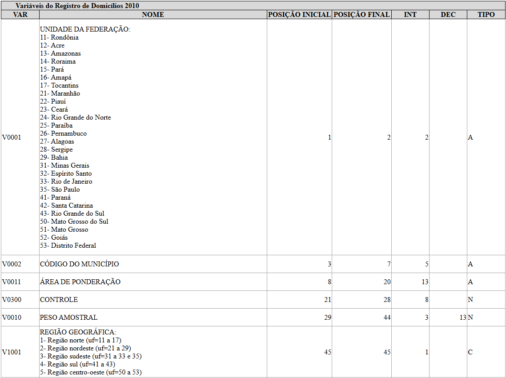
Com o dicionário em mãos, o passo seguinte é obter a geometria das áreas de ponderação de Belo Horizonte (código IBGE 3106200) com a função read_weighting_area() do geobr. Com ele, poderemos visualizar espacialmente os resultados nos mapas produzidos adiante e selecionar os códigos das áreas de ponderação a serem utilizados para filtrar os microdados de BH.
ap_bh <- geobr::read_weighting_area(
code_weighting = 3106200,
year = 2010,
simplified = FALSE
)
ggplot(ap_bh) +
geom_sf(fill = "gray92", color = "gray60", linewidth = 0.3) +
theme_minimal() +
labs(title = NULL)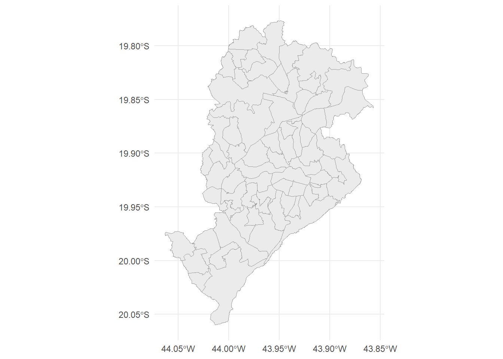
A partir dos códigos das áreas de ponderação, podemos ler os microdados filtrados somente para Belo Horizonte. A função read_households() do censobr retorna os dados de todo o Brasil como um Arrow Table (assim como na read_tracts() para os Agregados por Setor Censitário do capítulo anterior), sem carregá-los para a memória imediatamente. O filtro por code_weighting seleciona apenas os domicílios de Belo Horizonte, e collect() materializa o resultado em um data frame convencional. Selecionaremos também apenas as variáveis de interesse, o que reduz consideravelmente o volume de dados em memória.
## Armazenando códigos das áreas de ponderação de BH em um vetor ap_bh_cods
ap_bh_cods <- ap_bh |>
pull(code_weighting)
## Variáveis selecionadas do arquivo de domicílios
cols_dom <- c(
'V0300', # Identificador do domicílio (controle)
'V0010', # Peso amostral calibrado
'V1006', # Situação do domicílio (urbano/rural)
'code_weighting', # Área de ponderação
'V4001', # Tipo de domicílio
'V0201', # Condição de ocupação do domicílio (próprio, alugado, ...)
'V6203', # Densidade (moradores por cômodo)
'V0207', # Tipo de esgotamento sanitário
'V6531', # Rendimento domiciliar per capita
'V0222' # Automóvel particular (sim/não)
)
## Leitura e filtragem para BH
md_dom_bh <- censobr::read_households(year = 2010, columns = cols_dom) |>
filter(code_weighting %in% ap_bh_cods) |>
collect()Para visualizar as primeiras linhas dessa base de dados, podemos fazer:
head(md_dom_bh)# A tibble: 6 × 10
V0300 V0010 V1006 code_weighting V4001 V0201 V6203 V0207 V6531 V0222
<dbl> <dbl> <chr> <dbl> <chr> <chr> <dbl> <chr> <dbl> <chr>
1 169 20.7 1 3106200005001 01 1 0.6 1 700 1
2 14998 23.4 1 3106200005001 01 1 0.8 1 637. 2
3 32175 20.8 1 3106200005001 01 1 0.9 1 507. 2
4 43533 19.8 1 3106200005001 01 3 0.6 1 170 2
5 68172 22.9 1 3106200005001 01 1 0.8 1 333. 1
6 72256 23.2 1 3106200005001 01 1 1 1 600 2 Na sequência, faremos a definição do plano amostral que nos permitirá explorar adequadamente essa base.
8.4.2 Declarando o plano amostral
Na Seção 8.3, mencionamos que para obter estimativas estatisticamente válidas para os microdados, é preciso declarar ao srvyr o tipo de amostragem realizada com a função as_survey_design4. Sem essa declaração, as estatísticas descritivas ignorariam a estratificação e os pesos calibrados, produzindo erros-padrão incorretos e, consequentemente, intervalos de confiança inadequados.
Lembremos que no caso dos domicílios, temos uma amostragem aleatória estratificada, em que os setores censitários são os estratos. Nosso objetivo, então, é caracterizar esse plano amostral por meio do preenchimento de 4 parâmetros da função as_survey_design:
id: unidade amostral.strata: o estrato do plano amostral.weights: pesos amostrais.fpc: correção de população finita (do inglês, finite population correction).
Em primeiro lugar, para o parâmetro id, devemos indicar as unidades que foram amostradas aleatoriamente no nosso plano. Como cada linha representa um domicílio na tabela md_dom_bh, podemos fazer simplesmente passar id = 1 dentro da função as_survey_design(). Na sequência, devemos definir o estrato do plano amostral em strata. À primeira vista, parece óbvio que devamos indicar os setores censitários para este parâmetro. Todavia, além de não haver essa informação nos microdados, lembremos que os pesos amostrais fornecidos na coluna V0010 referem-se à versão calibrada e que essa calibração é feita no nível da área de ponderação. Deste modo, devemos inserir a coluna com o código da área de ponderação da tabela md_dom_bh, ou seja, code_weighting.
Posteriormente, temos que declarar os pesos, e isto é simples, uma vez que eles são representados pela coluna V0010 de md_dom_bh. Finalmente, precisamos inserir o parâmetro fpc, um fator usado em amostragem para ajustar a variância, o erro-padrão e a margem de erro quando a amostra representa uma fração não desprezível de uma população finita. A ideia é que quando a população é finita e você retira uma parcela considerável dela, há menos incerteza do que haveria numa população muito grande ou “infinita”. Então, o FPC reduz o erro amostral estimado5.
Neste caso, o que a função as_survey_design() necessita é que forneçamos uma coluna na base de dados md_dom_bh com o total de unidades correspondente aos estratos definido em strata, ou seja, a quantidade de domicílios total da área de ponderação (no nosso caso.) Uma maneira de obtermos essa informação é somar os valores dos pesos V0010 em cada área de ponderação. Lembre-se que a ideia do peso de uma unidade amostral é exatamente indicar quantas unidades ela representa em seu estrato. Logo somar os pesos de todas as unidades dentro da área de ponderação corresponderá ao valor total de domicílios nesta área.
Para tanto, devemos primeiro produzimos uma tabela sumarizada que computa os totais de domicílios de cada área de ponderação. Na sequência, trazemos esses totais da tabela sumarizada para cada linha de md_dom_bh com o operador left_join, informando code_weighting como chave, conforme o código abaixo:
## Total de domicílios expandido por área de ponderação (para correção de população finita)
dom_ap <- md_dom_bh |>
group_by(code_weighting) |>
summarize(n_dom = sum(V0010))
## Adiciona n_dom ao arquivo de domicílios
md_dom_bh <- md_dom_bh |>
left_join(dom_ap, by = "code_weighting")
## Observe a última coluna n_dom adicionada à tabela
head(md_dom_bh)# A tibble: 6 × 11
V0300 V0010 V1006 code_weighting V4001 V0201 V6203 V0207 V6531 V0222 n_dom
<dbl> <dbl> <chr> <dbl> <chr> <chr> <dbl> <chr> <dbl> <chr> <dbl>
1 169 20.7 1 3106200005001 01 1 0.6 1 700 1 13998
2 14998 23.4 1 3106200005001 01 1 0.8 1 637. 2 13998
3 32175 20.8 1 3106200005001 01 1 0.9 1 507. 2 13998
4 43533 19.8 1 3106200005001 01 3 0.6 1 170 2 13998
5 68172 22.9 1 3106200005001 01 1 0.8 1 333. 1 13998
6 72256 23.2 1 3106200005001 01 1 1 1 600 2 13998Observe que os valores de n_dom são repetidos para todas as 6 primeiras linhas mostradas acima, pois essas observações são relativas a domicílios de uma mesma área de ponderação identificada pela coluna code_weighting. Com estas definições, podemos finalmente produzir o plano amostral da função as_survey_design(), de acordo com o código abaixo:
## Objeto de desenho amostral (srvyr)
pa_dom <- md_dom_bh |>
as_survey_design(
ids = 1, # cada linha é um domicílio (unidade sorteada)
strata = code_weighting, # estratos = áreas de ponderação (onde a calibração foi feita)
weights = V0010, # pesos calibrados
fpc = n_dom # total de domicílios em cada área (correção de população finita)
)O objeto pa_dom reúne os dados e a especificação completa do plano amostral. Todas as funções de análise do srvyr a seguir receberão esse objeto, garantindo que as estimativas levem em conta a estratificação e os pesos.
8.4.3 Calculando estatísticas
Com o plano amostral configurado, podemos calcular estimativas para qualquer variável dos microdados. O fluxo de trabalho é similar ao do dplyr, com summarize() para estatísticas do município como um todo e group_by() para análises por subgrupos.
Começamos estimando a média e a mediana do rendimento domiciliar per capita (V6531) em Belo Horizonte. Os argumentos vartype = "ci" (de Confidence Interval) e level = 0.95 solicitam que o resultado inclua os limites inferior e superior do intervalo de confiança de 95%.
pa_dom |>
summarize(
renda_media = survey_mean(V6531, na.rm = TRUE,
vartype = "ci", level = 0.95),
renda_mediana = survey_median(V6531, na.rm = TRUE,
vartype = "ci", level = 0.95)
) |>
knitr::kable(
col.names = c("Média", "IC inf. (média)", "IC sup. (média)",
"Mediana", "IC inf. (mediana)", "IC sup. (mediana)"),
digits = 1
)| Média | IC inf. (média) | IC sup. (média) | Mediana | IC inf. (mediana) | IC sup. (mediana) |
|---|---|---|---|---|---|
| 1765.2 | 1714.5 | 1815.8 | 765 | 759 | 777.5 |
A mediana é substancialmente menor que a média, o que reflete a assimetria positiva da distribuição de renda. Uma minoria de domicílios com rendimentos muito altos eleva a média sem deslocar a mediana, tornando esta última a medida mais representativa da renda típica.
Uma comparação natural é verificar como a posse de automóvel particular (V0222) se associa ao rendimento domiciliar (V6531). O gráfico a seguir apresenta a renda mediana estimada para cada categoria (função survey_median()), com o respectivo intervalo de confiança de 95%.
pa_dom |>
filter(!is.na(V0222)) |>
group_by(V0222) |>
summarize(
renda_mediana = survey_median(V6531, na.rm = TRUE,
vartype = "ci", level = 0.95)
) |>
mutate(V0222 = factor(V0222,
levels = c("1", "2"),
labels = c("Com automóvel", "Sem automóvel"))) |>
ggplot(aes(x = V0222, y = renda_mediana,
ymin = renda_mediana_low, ymax = renda_mediana_upp)) +
geom_col(fill = "steelblue", alpha = 0.85, width = 0.5) +
geom_errorbar(width = 0.15, color = "orange", linewidth = 0.8) +
scale_y_continuous(
labels = scales::label_dollar(prefix = "R$ ", big.mark = ".", decimal.mark = ",")
) +
labs(x = NULL, y = "Renda mediana (R$)") +
theme_minimal()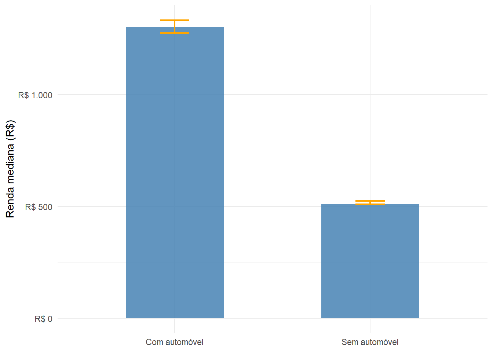
A diferença entre os dois grupos é expressiva, e como os intervalos de confiança não se sobrepõem, ela é estatisticamente significativa. Domicílios com automóvel apresentam renda per capita mediana substancialmente maior, resultado esperado dado o custo de aquisição e manutenção de um veículo próprio.
Os microdados também permitem estimar proporções para variáveis categóricas. O gráfico a seguir apresenta a distribuição de domicílios por condição de ocupação do domicílio (V0201), com a proporção estimada e o intervalo de confiança de 95% para cada categoria (função survey_prop()).
pa_dom |>
group_by(V0201) |>
summarize(
proporcao = survey_prop(vartype = "ci", level = 0.95)
) |>
mutate(V0201 = factor(V0201,
levels = c("1", "2","3","4","5","6"),
labels = c("Próprio de algum morador - já pago", "Próprio de algum morador - ainda pagando",
"Alugado","Cedido por empregador","Cedido de outra forma","Outra condição")
)
) |>
ggplot(aes(x = reorder(V0201, proporcao), y = proporcao,
ymin = proporcao_low, ymax = proporcao_upp)) +
geom_col(fill = "steelblue", alpha = 0.85) +
geom_errorbar(width = 0.3, color = "orange", linewidth = 0.8) +
coord_flip() +
scale_y_continuous(labels = scales::label_percent(decimal.mark = ",")) +
labs(x = NULL, y = "Proporção") +
theme_minimal()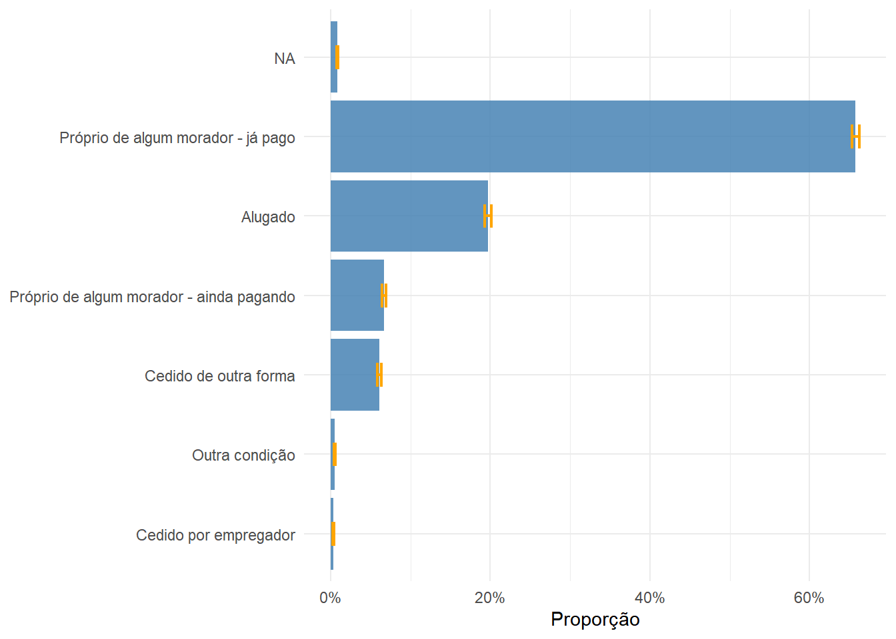
Por fim, vamos mostrar como produzir uma nova variável a partir de uma existente e computar algumas estatísticas. Utilizaremos a variável V0207 (Tipo de esgotamento sanitário), cujas cateorias são: - 1- Rede geral de esgoto ou pluvial - 2- Fossa séptica - 3- Fossa rudimentar - 4- Vala - 5- Rio, lago ou mar - 6- Outro
Produziremos uma nova variável denominada esg_rede que agrupa as seis categorias em duas, separando os domicílios ligados à rede geral de esgoto ou pluvial e os que usam fossa séptica (categorias 1 e 2) daqueles que destinam o esgoto de outras formas (categorias 3 a 6). O agrupamento é uma simplificação de trabalho, e os critérios técnicos que sustentam essa separação serão discutidos na Parte 3 do livro.
pa_dom |>
mutate(esg_rede = factor(ifelse(V0207 %in% c('1','2'), 'Rede ou fossa', 'Outras formas'))) |>
group_by(esg_rede) |>
summarize(proporcao = survey_prop(vartype = "ci", level = 0.95)) |>
ggplot(aes(x = esg_rede, y = proporcao,
ymin = proporcao_low, ymax = proporcao_upp)) +
geom_col(fill = "steelblue", alpha = 0.85, width = 0.5) +
geom_errorbar(width = 0.15, color = "orange", linewidth = 0.8) +
scale_y_continuous(labels = scales::label_percent(decimal.mark = ",")) +
labs(x = NULL, y = "Proporção") +
theme_minimal()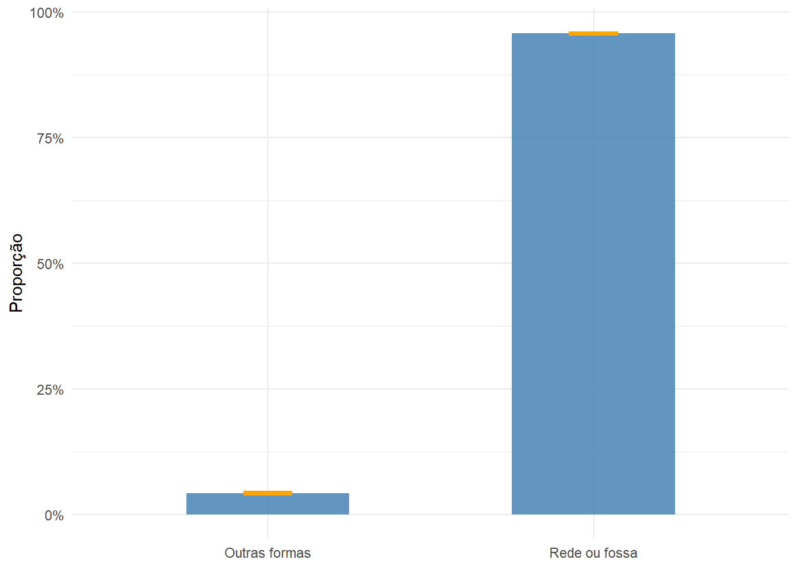
8.4.4 Produzindo mapas
As mesmas estatísticas calculadas para o município como um todo podem ser desagregadas por área de ponderação com group_by(code_weighting) e visualizadas espacialmente com geom_sf(). O mapa da Figura 8.9 apresenta a renda domiciliar per capita mediana em cada área de ponderação. Para isso, calculamos a mediana por área com survey_median() e depois unimos o resultado à geometria com left_join().
## Estatística por área de ponderação
rend_ap <- pa_dom |>
group_by(code_weighting) |>
summarize(rend_mediana = survey_median(V6531, na.rm = TRUE))
## Join com geometria e mapa
ap_bh |>
left_join(rend_ap, by = join_by(code_weighting)) |>
ggplot() +
geom_sf(aes(fill = rend_mediana), color = "white", linewidth = 0.2) +
scale_fill_distiller(
palette = "RdYlGn",
direction = 1,
name = "Renda mediana\n(R$)",
labels = scales::label_dollar(prefix = "R$ ", big.mark = ".", decimal.mark = ",")
) +
theme_minimal() +
theme(
axis.text = element_blank(),
axis.ticks = element_blank(),
panel.grid = element_blank()
)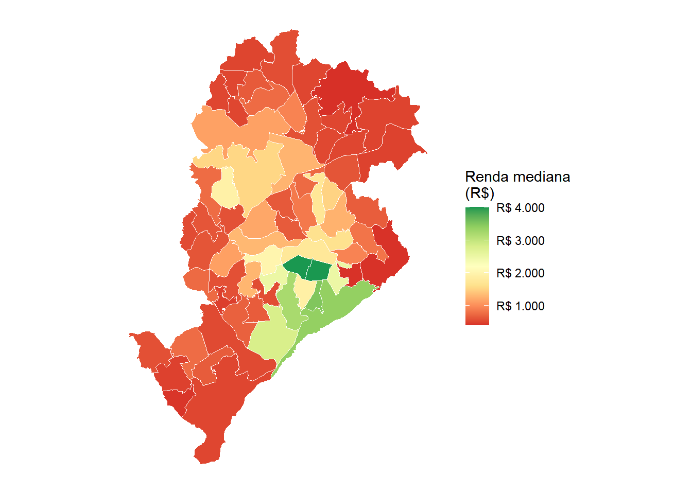
O padrão espacial é marcante, com áreas com rendimentos mais altos concentrando-se na região sudeste do município, enquanto os menores rendimentos predominam em regiões mais periféricas ao Sul e ao Norte. O mapa da Figura 8.10 apresenta, para as mesmas unidades espaciais, a proporção de domicílios com esgotamento por rede geral ou fossa séptica. O procedimento é idêntico ao do mapa anterior, substituindo survey_median() por survey_prop() e criando uma variável indicadora antes do agrupamento.
## Estatística por área de ponderação
esg_ap <- pa_dom |>
mutate(esg_rede = factor(ifelse(V0207 %in% c('1','2'), 'Rede ou fossa', 'Outras formas'))) |>
group_by(code_weighting, esg_rede) |>
summarize(proporcao = survey_prop()) |>
filter(esg_rede == 'Rede ou fossa')
## Join com geometria e mapa
ap_bh |>
left_join(esg_ap, by = join_by(code_weighting)) |>
ggplot() +
geom_sf(aes(fill = proporcao), color = "white", linewidth = 0.2) +
scale_fill_distiller(
palette = "Blues",
direction = 1,
name = "Proporção com\nrede ou fossa",
labels = scales::label_percent(decimal.mark = ",")
) +
theme_minimal() +
theme(
axis.text = element_blank(),
axis.ticks = element_blank(),
panel.grid = element_blank()
)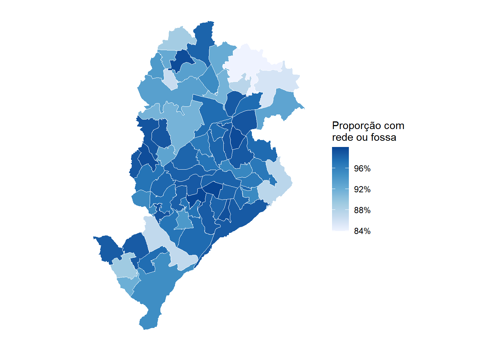
Comparando os dois mapas, observa-se uma associação positiva entre renda e cobertura de saneamento. As áreas com maior rendimento tendem a apresentar maior proporção de domicílios atendidos pela rede geral de esgoto. A relação, contudo, não é perfeita, e identificar onde o saneamento está aquém do esperado dado o nível de renda é exatamente o tipo de diagnóstico que os microdados da amostra viabilizam.
8.5 Analisando microdados de indivíduos
8.5.1 Obtendo e preparando os dados
O arquivo de pessoas do Censo segue a mesma lógica de acesso que o de domicílios, mas exige atenção especial na especificação do plano amostral. Como discutido na Seção 8.3, os indivíduos não foram sorteados diretamente. O que foi sorteado foi o domicílio, e todos os seus moradores foram entrevistados. Essa estrutura de amostragem estratificada e conglomerada precisa ser declarada explicitamente, como veremos adiante.
Assim como no arquivo de domicílios, vale consultar o dicionário antes de iniciar a leitura.
censobr::data_dictionary(year = 2010, dataset = 'population')O código a seguir seleciona as variáveis de interesse e lê os microdados de indivíduos de Belo Horizonte, aproveitando os códigos de área de ponderação já extraídos anteriormente.
## Variáveis selecionadas do arquivo de pessoas
cols_ind <- c(
'V0300', # Identificador do domicílio (controle, usado como id do conglomerado)
'V0010', # Peso amostral calibrado
'V1006', # Situação do domicílio (urbano/rural)
'code_weighting', # Área de ponderação
'V0601', # Sexo
'V0606', # Cor ou raça
'V6036', # Idade (em anos)
'V6400', # Nível de instrução
'V0661', # Retorna do trabalho para casa diariamente?
'V0662' # Tempo habitual de deslocamento até o trabalho
)
## Leitura e filtragem para BH
md_ind_bh <- censobr::read_population(year = 2010, columns = cols_ind) |>
filter(code_weighting %in% ap_bh_cods) |>
collect()8.5.2 Declarando o plano amostral
O plano amostral de indivíduos difere do de domicílios em um aspecto fundamental, que é a declaração da conglomeração. No arquivo de pessoas, os moradores não chegaram à amostra de forma independente. Foram os domicílios que foram sorteados, e cada morador pertence a um conglomerado (seu domicílio). Dois moradores do mesmo domicílio tendem a ter características muito mais similares entre si do que dois indivíduos escolhidos ao acaso na população. Ignorar essa estrutura leva a erros-padrão subestimados, porque o srvyr contaria cada observação como se fosse independente, quando na verdade membros de uma mesma família contribuem com informação redundante.
Para informar a conglomeração ao srvyr, usamos o argumento ids = V0300, em que V0300 é o identificador do domicílio. Lembre-se que o argumento ids espera a unidade amostral sorteada que, no nosso caso, são os domicílios. Com isso, o pacote entende que todos os indivíduos com o mesmo V0300 foram coletados juntos, como parte do mesmo conglomerado. Além disso, o fpc agora passa a ser o total expandido de pessoas por área de ponderação, conforme o código abaixo:
## Total de indivíduos expandido por área de ponderação (para correção de finitude)
pop_ap <- md_ind_bh |>
group_by(code_weighting) |>
summarize(n_ind = sum(V0010))
## Adiciona n_ind ao arquivo de pessoas
md_ind_bh <- md_ind_bh |>
left_join(pop_ap, by = join_by(code_weighting))
## Observando os 6 primeiros resultados com a nova coluna n_ind
head(md_ind_bh)# A tibble: 6 × 11
V0300 V0010 V1006 code_weighting V0601 V0606 V6036 V6400 V0661 V0662 n_ind
<dbl> <dbl> <chr> <dbl> <chr> <chr> <dbl> <chr> <chr> <chr> <dbl>
1 169 20.7 1 3106200005001 1 1 65 1 1 2 45869.
2 169 20.7 1 3106200005001 1 1 0 1 <NA> <NA> 45869.
3 169 20.7 1 3106200005001 2 1 21 3 1 2 45869.
4 169 20.7 1 3106200005001 1 1 27 3 1 2 45869.
5 14998 23.4 1 3106200005001 1 2 47 3 <NA> <NA> 45869.
6 14998 23.4 1 3106200005001 2 2 17 1 <NA> <NA> 45869.Sendo assim, podemos então definir o plano amostral como:
## Objeto de desenho amostral (srvyr)
pa_ind <- md_ind_bh |>
as_survey_design(
ids = V0300, # domicílio = unidade de conglomeração
strata = code_weighting, # estratos = áreas de ponderação
weights = V0010, # pesos calibrados
fpc = n_ind # total de pessoas em cada área (correção de população finita)
)8.5.3 Calculando estatísticas
Com o plano amostral de indivíduos configurado, podemos explorar variáveis que o Questionário Básico não cobre. Começamos com a distribuição por cor ou raça (V0606). O gráfico a seguir apresenta a proporção estimada para cada grupo, com intervalo de confiança de 95%.
pa_ind |>
group_by(V0606) |>
summarize(
proporcao = survey_prop(vartype = "ci", level = 0.95)
) |>
mutate(V0606 = factor(V0606,
levels = c("1", "2", "3", "4", "5"),
labels = c("Branca", "Preta", "Amarela", "Parda", "Indígena"))) |>
ggplot(aes(x = reorder(V0606, -proporcao), y = proporcao,
ymin = proporcao_low, ymax = proporcao_upp)) +
geom_col(fill = "steelblue", alpha = 0.85) +
geom_errorbar(width = 0.3, color = "gray30") +
scale_y_continuous(labels = scales::label_percent(decimal.mark = ",")) +
labs(x = NULL, y = "Proporção") +
theme_minimal()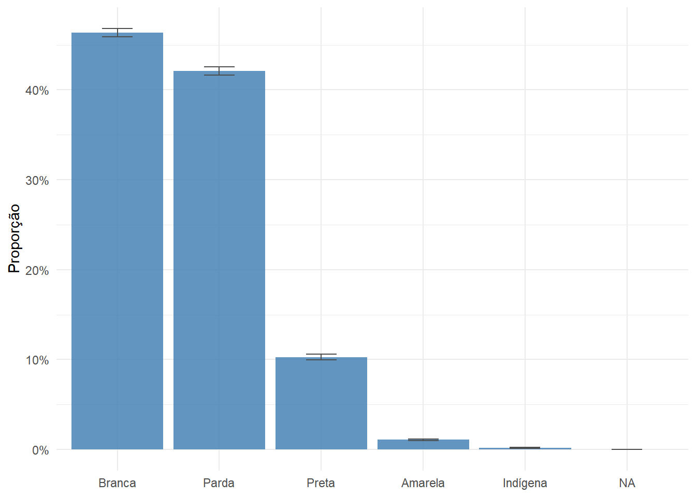
O tempo de deslocamento ao trabalho (V0662) é uma das poucas perguntas sobre mobilidade disponíveis no Censo. O gráfico a seguir restringe a análise às pessoas que retornavam diariamente para casa (V0661 == '1') e compara a distribuição dos tempos de deslocamento entre os três principais grupos de cor ou raça, com intervalos de confiança de 95%. Focamos nos grupos Branca, Preta e Parda por concentrarem a quase totalidade da população de Belo Horizonte.
pa_ind |>
filter(V0661 == '1', V0606 %in% c("1", "2", "4")) |>
mutate(
V0606 = factor(V0606,
levels = c("1", "2", "4"),
labels = c("Branca", "Preta", "Parda"))
) |>
group_by(V0606, V0662) |>
summarize(proporcao = survey_prop(vartype = "ci", level = 0.95)) |>
ggplot(aes(x = V0662, y = proporcao,
ymin = proporcao_low, ymax = proporcao_upp,
fill = V0606)) +
geom_col(position = "dodge", alpha = 0.85) +
geom_errorbar(position = position_dodge(width = 0.9),
width = 0.25, color = "gray30") +
scale_y_continuous(labels = scales::label_percent(decimal.mark = ",")) +
scale_fill_brewer(palette = "Set2", name = "Cor ou raça") +
labs(x = "Tempo de deslocamento (código)", y = "Proporção") +
theme_minimal()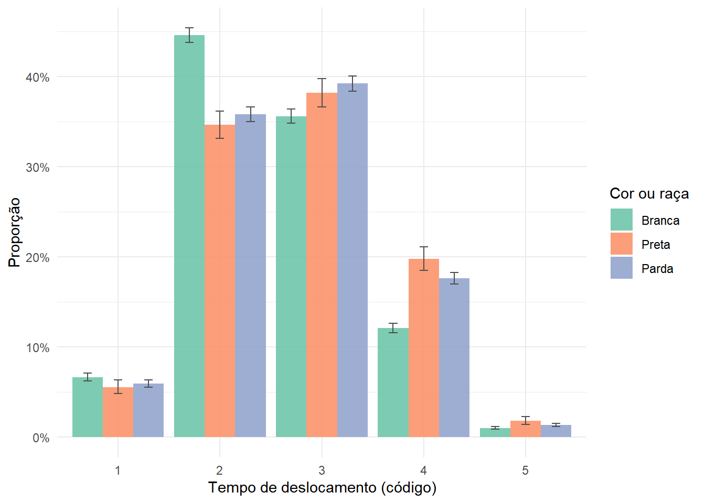
DicaInterpretando os códigos das variáveis
Os valores numéricos de variáveis como V0606 (cor ou raça) e V0662 (tempo de deslocamento) correspondem a categorias descritas no dicionário de variáveis. Para interpretá-los corretamente, consulte censobr::data_dictionary(year = 2010, dataset = 'population') e localize a variável de interesse. A coluna de categorias lista os valores e seus rótulos. A conversão para rótulos legíveis pode ser feita com factor(..., levels = ..., labels = ...) após a leitura dos dados.
8.5.4 Produzindo mapas
Assim como nos domicílios, as estatísticas por pessoa podem ser desagregadas por área de ponderação e mapeadas. O mapa da Figura 8.13 apresenta, para cada área de ponderação de Belo Horizonte, a proporção de trabalhadores com tempo de deslocamento superior a 30 minutos entre casa e trabalho, um indicador do esforço cotidiano de mobilidade. As categorias da variável V0662 com código maior ou igual a 3 correspondem a tempos superiores a 30 minutos (confirme com data_dictionary() se os códigos mudaram).
desloc_ap <- pa_ind |>
filter(V0661 == '1', !is.na(V0662)) |>
mutate(desloc_longo = factor(ifelse(as.integer(V0662) >= 3,
'Mais de 30 min', 'Até 30 min'))) |>
group_by(code_weighting, desloc_longo) |>
summarize(proporcao = survey_prop()) |>
filter(desloc_longo == 'Mais de 30 min')
ap_bh |>
left_join(desloc_ap, by = join_by(code_weighting)) |>
ggplot() +
geom_sf(aes(fill = proporcao), color = "white", linewidth = 0.2) +
scale_fill_distiller(
palette = "Oranges",
direction = 1,
name = "Proporção",
labels = scales::label_percent(decimal.mark = ",")
) +
theme_minimal() +
theme(
axis.text = element_blank(),
axis.ticks = element_blank(),
panel.grid = element_blank()
)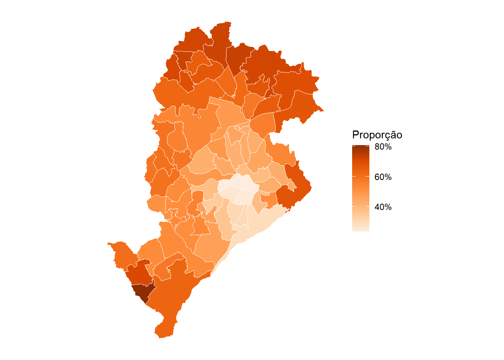
As maiores proporções de deslocamentos longos tendem a ocorrer nas áreas periféricas do município, onde a distância até os principais centros de emprego é maior e a oferta de transporte coletivo pode ser menos densa. Sobreposto ao mapa de renda da Figura 8.9, esse padrão sugere uma dupla desvantagem nas periferias, com menor renda e maior esforço cotidiano de mobilidade.
NotaCombinando domicílios e indivíduos
Os dois arquivos de microdados compartilham a variável V0300, o identificador do domicílio. Isso permite cruzar informações dos dois arquivos, por exemplo, associar características do domicílio (tipo de esgotamento, número de cômodos) às características dos moradores (cor ou raça, escolaridade). Esse cruzamento é feito com left_join() antes de montar o plano amostral e pode enriquecer consideravelmente a análise.
8.6 Exercícios
Utilizando os microdados de domicílios de Belo Horizonte (Censo 2010), calcule a densidade média de moradores por cômodo (
V6203) em cada área de ponderação e produza um mapa. As áreas com maior densidade coincidem com as de menor renda per capita? Sobreponha os dois mapas ou construa um gráfico de dispersão para investigar essa relação.Utilizando os microdados de indivíduos de Belo Horizonte (Censo 2010), compare o nível de instrução médio (
V6400) entre pessoas pardas, pretas e brancas, com intervalos de confiança. Repita a análise separando por sexo (V0601). Os padrões diferem entre homens e mulheres?Replique os mapas de renda domiciliar per capita mediana e de cobertura de esgoto por rede geral para outra capital brasileira à sua escolha. Compare os padrões encontrados com os de Belo Horizonte. Qual das duas cidades apresenta maior desigualdade intraurbana nas variáveis analisadas?
daí se origina a nomenclatura microdados↩︎
início de Abril de 2026↩︎
Lembre-se de instalá-los com
install.packages()caso ainda não tenha feito por aí↩︎No caso do pacote
survey, essa função é asvydesign()↩︎Esse fator é dado por \(\sqrt{\frac{N-n}{N-1}}\), em que \(n\) é o tamanho da amostra e \(N\) é o tamanho da população↩︎